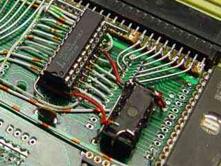

|
|
32k ROM/RAM expansion by Lee Davison |
|
 Introduction
Introduction
I wanted to make an ISA card slot for my Vic 20 and decided to use a scrap 8k RAM expansion cartridge (the same as the 16k cart but only half populated) as the physical base for that. While I was about it it seemed a shame not to use some of the space to give me some extra ROM and RAM capacity.
256k bit size devices are used for both the ROM and RAM and, as most of the pins are the same as those for the original 16k bit RAM chips, these were located in the same positions (with a little overlap) as two of the original devices. This gives enough RAM to fully populate the Vic with 32k of continuous RAM, or add up to 24k continuous RAM and populate the cartridge addresses with RAM.
Most of the connections are direct from the Vic expansion connector and only the two chip selects and the address lines A14 and A13 need to be generated. These are generated by a GAL used for nearly all the glue logic on the card. The equations for this GAL are in mem.pld and can be compiled with WinCUPL. The fuse file, mem.jed and the compiler listing, mem.txt are also included.
The 150ns delay line is only needed if you want the ISA card slot as well as the ROM/RAM expansion. If it's not needed just omit it and tie the dlyÿ2 pin on the GAL to +V.
The Vic expansion connector is shown in the diagram as if you are holding the expansion card component side up with the edge connector towards you. The upper side is, from left to right, 22 to 1 and the lower side is, again from left to right, Z to A. Note that there are some letters not used in identifying connections on the lower side, the missing ones being G, I, O and Q.

Two of the positions that the original RAM chips occupied were populated with 24 pin turned pin type sockets and into these were pushed the 28 pin turned pin sockets needed for the 256k bit devices. The track to pin 24 on the original position was cut for both positions as was the pin 21 track. The connections to these pins was made by soldering wire to the pads and the extra four pins were connected by soldering wires direct to the socket pins. This just gives enough clearance to get the modified board into the Vic cartridge slot but the cartridge case will never fit again! It should be possible using this method to mount 32 pin devices as enough room is available on the board. Some form of bank switching could be provided by using a bigger GAL and a latch for the upper address lines.
The GAL was mounted by soldering a 20 pin turned pin socket to a small piece of stripboard with the strip side up (remembering to cut the tracks between the pins first!) and glueing this to the top side of the card using quick set epoxy adhesive. Once the adhesive had set the connections to the GAL were made by soldering to the strips with tinned copper wire for the supplies and insulated solid copper wire for all the other connections.
The 150ns delay line was added after some testing and is held in place, 'dead bug' style, by the tinned wire that supplies the Vcc and GND connections. This may later be glued in place.
| Last page update: 26th February, 2004. | e-mail me
 |